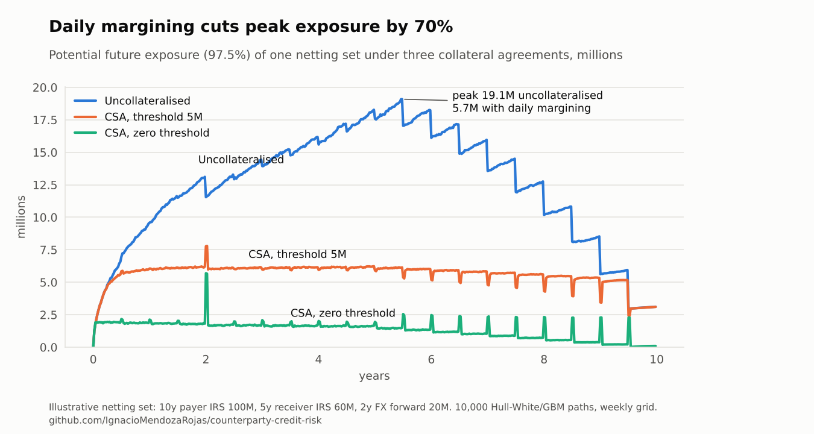
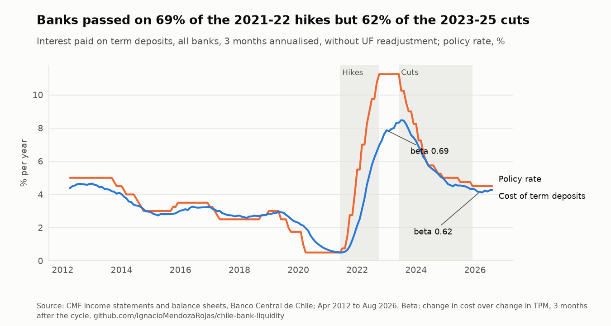
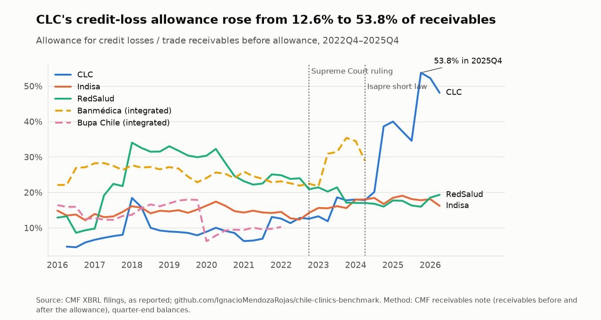
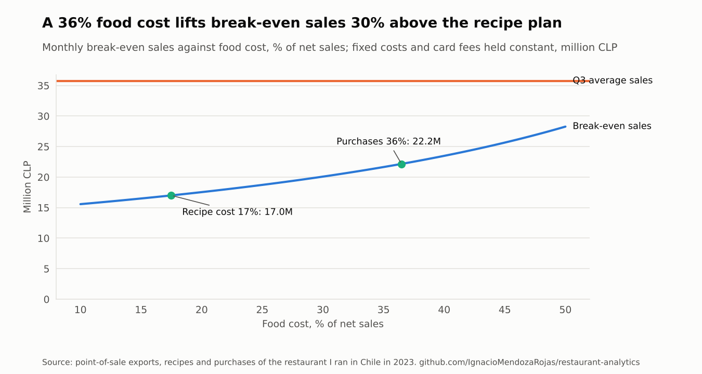
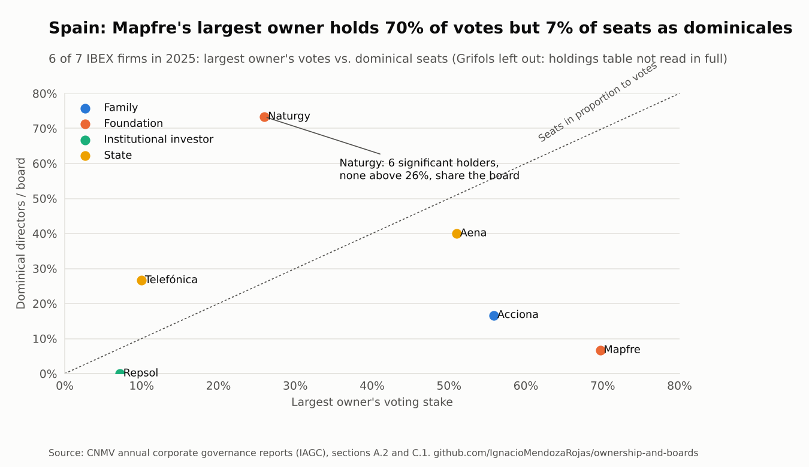

Ignacio Mendoza Rojas
Financial Risk & Modelling Analyst at Banco Ripley, based in Barcelona
I build risk and valuation models, and the data infrastructure that feeds them. Five years in banking and corporate finance: counterparty and liquidity risk at Banco Ripley, and financial planning and investment evaluation at Red Interclínica in 2023, between my two roles at the bank.
Each section below is one competency: where I use it at work, the tool I rebuilt from public theory and real data, and what it found. The last one applies the same work to research in corporate governance. No employer code, data or parameters.
Counterparty credit risk & derivatives
Daily margining cuts this portfolio's peak exposure by 70%, from 19.1 to 5.7 million.
At work: the stochastic PFE models behind counterparty limits, and CVA/DVA sensitivities. Rebuilt here: a Monte Carlo engine with Hull-White rates and FX, netting and collateral, EE, PFE, Basel EEPE and CVA/DVA, each pricer checked against a closed form. Netting alone cuts CVA by 26%.

Liquidity risk & funding
Chilean banks passed on 69% of the 2021-22 rate hikes to their term deposits, but only 62% of the 2023-25 cuts.
At work: deposit decay, ILAAP projections under Basel III and cash-flow stress tests. Rebuilt here: every Chilean bank's balance sheet and income statement since 2008, read as a liquidity question: the stable core of deposits and stress outflows (demand deposits rose 43% above trend in the pandemic, then ran 20% in a year), forecasts tested out of sample, and deposit betas by rate cycle. Mutual funds, which hold 15% of these banks' term deposits and once withdrew 63% in a year, are a concentrated source: banks that rely on them more passed on more of the hikes. Both updated monthly by scheduled workflows.

- chile-bank-liquidity
Deposit stability, stress outflows and backtests, SARIMAX against exponential smoothing, mutual-fund funding and deposit betas, from the CMF API with a fallback to its monthly files. - chile-mutual-funds-analytics
Every mutual fund's holdings since 2019: six banks take 78% of the CLP 38.5 trillion funds lend to banks, 56% of it matures within a year.
Credit risk & financial statement analysis
Through the Isapre crisis, Clínica Las Condes' credit-loss allowance rose from 12.6% to 53.8% of its receivables; its peers barely moved.
At work: competitive benchmarking of Chilean clinic groups at Red Interclínica, built by hand in Excel. Rebuilt here: the same benchmark from every quarterly XBRL filing at the CMF since 2016, with receivables ageing, cost of risk, restatements logged and the order in which each indicator broke. Collection days moved first, in 2022. Updated twice a month.

Equity valuation & investment analysis
At about US$60, SQM's share price implies lithium at US$25,000 a tonne for the long run. My valuation, on a US$15,000 deck, gives US$42.
Background: my team won the CFA Institute Research Challenge for South America in 2021 covering SQM, and I evaluated projects on a clinic group's investment committee (NPV, IRR, payback). Rebuilt here: a segment-by-segment valuation engine from public filings, DCF and residual income, 10,000 simulated price paths, and the 2020 valuation held against what happened next. The implied lithium price is recomputed every week.

Read the October 2026 report The 2020 valuation, backtested equity-research-engine: code
Data engineering & automation
Every analysis above updates itself: regulator files without an API, checked before they reach a model.
At work: fund and portfolio data collection with Python and web scraping, and controls for a production database migration. Rebuilt here: a tested pipeline for the CMF portal (93 months rebuilt unattended, quality gates that caught real data errors) and a tool that proves a database migration lost nothing.
- cmf-ffmm-etl
Browser-like client for a portal with no API, seven quality checks, idempotent loads to any SQL database or a typed table in memory. - db-migration-validator
Structure, row counts, order-independent content fingerprints and grants, across Oracle, SQL Server, PostgreSQL and MySQL; fails the cutover on any critical finding.
Corporate finance & unit economics
The recipes said food cost was 17% of sales. The purchases said 36%, and break-even sales were 30% higher than planned.
At work: financial planning for four clinics and €11M of capex at Red Interclínica. Rebuilt here: menu engineering, yield-adjusted ingredient usage and break-even on the real operating data of a restaurant I ran in 2023, anonymised.

Research: corporate governance, business groups and firm finance
Fundación Mapfre holds 70% of Mapfre's votes but one of its 15 board seats as a dominical director. At Naturgy, six significant holders, none above 26%, hold 11 of 15.
The question: how combinations of owners (business groups, families, foundations, the State, pension funds and institutional investors) translate into board seats in two markets with concentrated ownership, Chile and Spain, which give minority owners different routes to the board. Built here: a panel from the regulators' public filings, the CMF's company pages and the CNMV's governance reports read out of PDF, with owners classified by type. In the pilot, the largest Chilean shareholder's median stake rose from 35% to 40% between 2010 and 2025, and Spanish controllers reach the board either through dominical directors or through executives, which a count of dominical seats alone misses.

- ownership-and-boards
Pilot of 30 Chilean and 7 Spanish listed firms: data, descriptive evidence, the research question and three hypotheses to test next. - arauco-living-case
My business-history essay on Arauco, from CORFO to the Angelini group, turned into a case that updates itself every month with FAOSTAT data and the news. Chile's pulp output went from 0.57 million tonnes at privatisation (1979) to a record 5.2 million in 2024. - literature-map
Bibliometric maps rebuilt every month from OpenAlex for the three fields of my research: trade credit in SMEs (the automated version of my bibliometric review), ownership and boards, and AI and labour costs. It measures growth, clusters of themes and under-connected themes that point to gaps. - Artificial Intelligence Use and Labour Cost Stickiness: Evidence from Spanish Firms
MSc thesis (8.5/10), Universitat de Barcelona: how AI use relates to the asymmetric response of labour costs to falling sales, on Orbis and SABI firm panels. The code is in a private repository, available on request; it runs on synthetic data of the same format, as the licensed data cannot be shared.
Experience and education
| 2023 – present | Financial Risk & Modelling Analyst, Banco Ripley, Chile |
| 2023 | Strategy & Investment Analyst, Red Interclínica, Chile |
| 2021 – 2023 | Financial Risk Analyst, Banco Ripley, Chile |
| 2025 – 2027 | MSc in Business Research, Universitat de Barcelona |
| 2020 – 2021 | MSc in Finance, Universidad Adolfo Ibáñez |
| 2016 – 2019 | BSc in Business Administration and Economics, Universidad Adolfo Ibáñez |
Winner with my team, CFA Institute Research Challenge, South America Regional Final, 2020–2021.